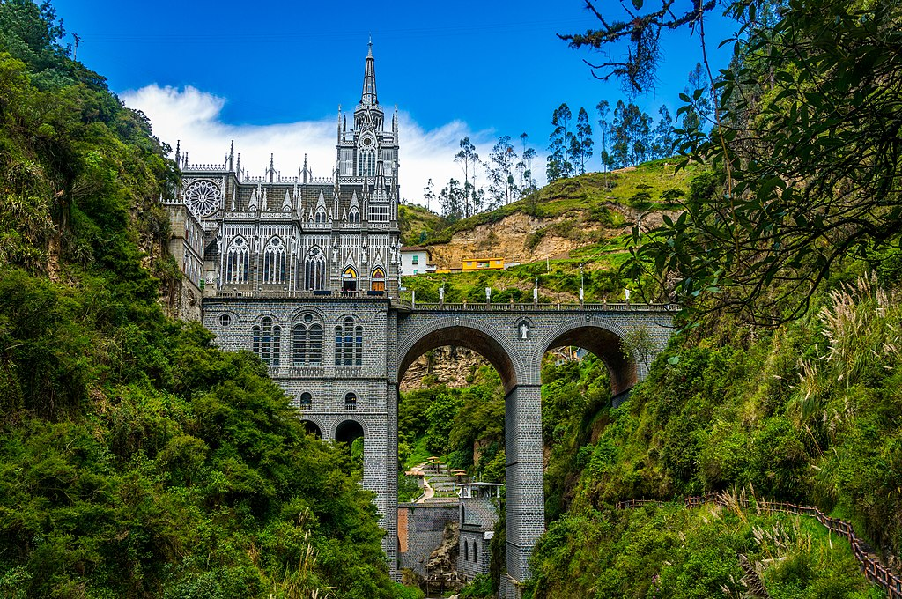

NARIÑO
Nariño es uno de los treinta y dos departamentos que, junto con Bogotá, Distrito Capital,
forman la República de Colombia.
Su capital es San Juan de Pasto. Está ubicado en el extremo suroeste del país,
en las regiones andina y pacífica,
limitando al norte con Cauca, al este con Putumayo, al sur con la República
de Ecuador y al oeste con el océano Pacífico.
Nariño presenta una geografía diversa y clima variado según las altitudes: caluroso
en la planicie del Pacífico y frío en la parte montañosa
, donde vive la mayor parte de la población, situación que se repite en sentido norte-sur.
El departamento es esencialmente agrícola y ganadero
